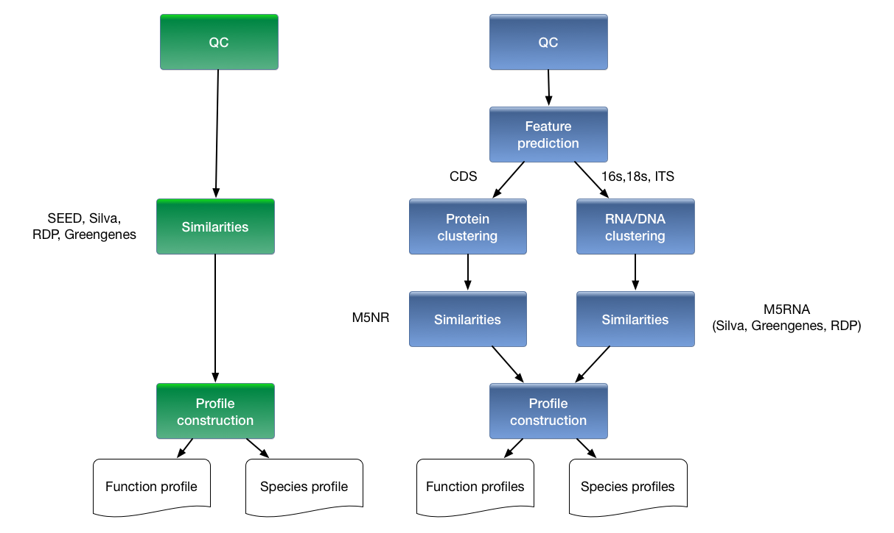
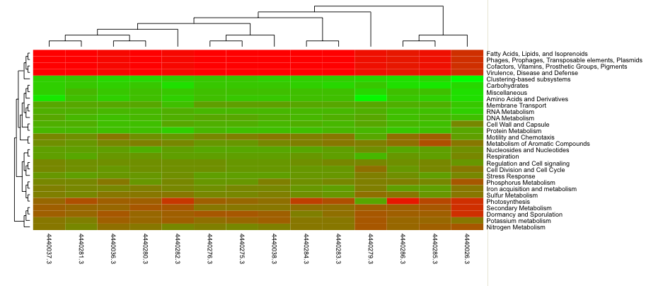
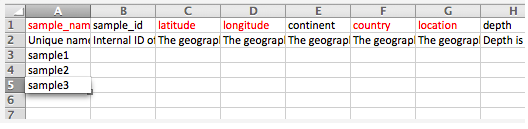
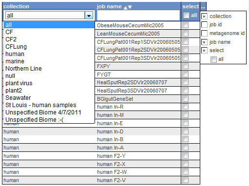

May 17, 2013
The National Institute of Healths NHGRI publishes information (see Figure  ) describing the development of computing costs and DNA sequencing cost over time [#!NHGRI_COST!#]. The dramatic gap between the shrinking sequencing cost and the more of less stable computing costs is a major challenge for biomedical researchers trying to use next generation DNA sequencing platforms to obtain information on microbial communities. Wilkening et al. [#!MGCLOUD!#] provide a real currency cost for the analysis of 100 gigabasepairs of DNA sequence data using BLASTX on Amazon's EC2 service: 900,000 US Dollars1.1. A more recent study by University of Maryland researchers [#!CLOVR!#] allows the computation of a real currency cost for a terabase of DNA shotgun data using complete metagenome analysis pipeline at over 5 million dollars per terabase.
) describing the development of computing costs and DNA sequencing cost over time [#!NHGRI_COST!#]. The dramatic gap between the shrinking sequencing cost and the more of less stable computing costs is a major challenge for biomedical researchers trying to use next generation DNA sequencing platforms to obtain information on microbial communities. Wilkening et al. [#!MGCLOUD!#] provide a real currency cost for the analysis of 100 gigabasepairs of DNA sequence data using BLASTX on Amazon's EC2 service: 900,000 US Dollars1.1. A more recent study by University of Maryland researchers [#!CLOVR!#] allows the computation of a real currency cost for a terabase of DNA shotgun data using complete metagenome analysis pipeline at over 5 million dollars per terabase.
However the growth in data enabled by next-generation sequencing platforms also provides an exciting opportunity for studying microbial communities, 99% of the microbes in which have not yet been cultured [#!MGREVIEW!#]. Cultivation free methods (often summarized as Metagenomics) offer novel insights into the biology of the vast majority of life on the planet [#!THOMASREVIEW!#].
Three types of metagenomics experiments are commonly used:
Frequently using Sanger sequencing instead of more cost efficient next generation sequencing.
Next generation sequencing of PCR amplified ribosomal genes providing a single reference gene based view of microbial community ecology.
The use of next generation technology applied directly to to environmental samples.
Each of these methods have strengths and weaknesses (see [#!THOMASREVIEW!#]) and so do the various sequencing technologies (see [#!LOMAN!#]).
To support user-driven analysis of all types of metagenomic data, we have provided MG-RAST [#!MG-RAST!#] at http://metagenomics.anl.gov. MG-RAST enables researchers to study function and composition of microbial communities.
The MG-RAST portal offers automated quality control, annotation and comparative analysis services and archiving service. At the time of writing () MG-RAST has completed the analysis of over 25 Terabasepairs of DNA data in over 78,000 datasets contributed by thousands of researchers world-wide.
The MG-RAST system provides answers to the following scientific questions:
Identifying the composition of microbial composition using either amplicon data for single genes or deriving community composition from shotgun metagenomic data using sequence similarities.
Using shotgun data (or metatranscriptomic data) derive the functional complement of a microbial community using similarity searches against a number of databases.
Based on sequence similarity searches, identify the organisms encoding specific functions.
In the new 3.0 version, datasets of 10s of gigabases can be annotated and comparison of taxa or functions that differed between samples is now limited by the available screen real estate. Figure  shows a comparison of the analytical and computational approaches used in MG-RAST v2 and v3. The major changes are the inclusion of a dedicated gene calling stage using FragGenescan [#!FGS!#], clustering of predicted proteins at 90% identify using uclust [#!UCLUST!#] and the use of BLAT [#!BLAT!#] for the computation of similarities. Together with changes in the underlying infrastructure this has allowed dramatic scaling of the analysis with the limited hardware available.
shows a comparison of the analytical and computational approaches used in MG-RAST v2 and v3. The major changes are the inclusion of a dedicated gene calling stage using FragGenescan [#!FGS!#], clustering of predicted proteins at 90% identify using uclust [#!UCLUST!#] and the use of BLAT [#!BLAT!#] for the computation of similarities. Together with changes in the underlying infrastructure this has allowed dramatic scaling of the analysis with the limited hardware available.
Similar to version 2.0, the new version of MG-RAST does not pretend to know the correct parameters for the transfer of annotations. Instead the user im empowered to choose the best parameters for their data sets.

|
The new version of MG-RAST represents a rethinking of core processes and data products, as well as new user interface metaphors and a redesigned computational infrastructure. MG-RAST supports a variety of user-driven analyses, including comparisons of many samples, previously too computationally intensive to support for an open user community.
Scaling to the new workload required changes in two areas: the underlying infrastructure needed to be re-thought and the analysis pipeline needed to be adapted to address the properties of the newest sequencing technologies.
The MG-RAST project uses a ticket system to manage the interaction with our users.
Dr. Mark D'Souza is managing the help desk interaction with the users, please do not email him directly but use the address given in Figure  .
.

|
We recommend including as much detail as possible into your emails to the help-desk, details like account names, MG-RAST identifiers will help us identify any issues and speed up resolving them.
MG-RAST was started by Rob Edwards and Folker Meyer in 2007.
The new analytical pipeline for MG-RAST version 3 (see Figure  )
is encapsulated and separated from the data store, enabling far greater scalability.
)
is encapsulated and separated from the data store, enabling far greater scalability.
Combined the changes in infrastructure and pipeline had made the new MG-RAST version 750 times faster than version 2.
The MG-RAST data model (see Figure  ) is something that changes dramatically to handle the size of modern next
generation sequencing data sets. We have made a number of choices that reduce the computational and storage burden.
) is something that changes dramatically to handle the size of modern next
generation sequencing data sets. We have made a number of choices that reduce the computational and storage burden.
It is important to mention that the size of the derived data products for a next generation data in MG-RAST set is typically about 10x the size of the actual data set. Individual data sets now reach up to a Terabase2.2 with the on disk footprint significantly larger than the basepair count due to the inefficient nature of FASTQ files, that basically double the on disk size for FASTQ representations.
Using abundance profiles where we count the number of occurences of function or taxon per metagenomic data set is one important factor that keeps the data sets managble. Instead of growing the data set sizes (often with several hundred million individual sequences per data set) the data products now are more or less static in size.
By running exactly one similarity computation for proteins and another one for rRNA features, we have limited the computional requirements.
By clustering features at 90% identity, we reduce the number of times we compute on similar proteins. Abundant features will be even more efficiently clustered leading to more compression among for abundant species.
As shown in Figure  MG-RAST relies on abundance profiles to capture information for each metagenome.
MG-RAST relies on abundance profiles to capture information for each metagenome.
The following abundance profiles are calculated for every metagenome:
This table represents the number of sequences (clusters) per database entry in the M5nr.
This table represents a summary of all the MD5s that match a given function.
This table represents a summary of all the MD5s that match a given hierarchy entry.
This table represents a summary of all MD5s that match a given taxon entry.
The static helper tables (show in blue in figure  ) help
keep the main tables smaller, by normalizing and providing integer representations for the entities in the abundance profiles.
) help
keep the main tables smaller, by normalizing and providing integer representations for the entities in the abundance profiles.
The pipeline shown in Figure  ) contains a significant number of improvements over version 3.0. Using the M5NR [#!M5NR!#] the new pipeline computes results against many reference databases instead of only SEED.
Several key algorithmic improvements were needed to support the flood of user-generated data (see Figure
) contains a significant number of improvements over version 3.0. Using the M5NR [#!M5NR!#] the new pipeline computes results against many reference databases instead of only SEED.
Several key algorithmic improvements were needed to support the flood of user-generated data (see Figure  ). Using a dedicated software to perform gene prediction instead of using a similarity based approach reduces runtime requirements, the additional clustering of proteins at 90% identity reduces data while preserving biological signal.
). Using a dedicated software to perform gene prediction instead of using a similarity based approach reduces runtime requirements, the additional clustering of proteins at 90% identity reduces data while preserving biological signal.
Due to the amount of sequence data submitted to MG-RAST (see Figure  ) only protein coding genes and ribosomal RNA genes will be annotated by the pipeline.
) only protein coding genes and ribosomal RNA genes will be annotated by the pipeline.
Below we describe each step of the pipeline in some detail, all data sets generated by the individual stages of the processing pipeline are made available as downloads. Appendix  lists the available files for each data set.
lists the available files for each data set.
We note that de-replication is not suitable for amplicon data sets that are likely to share common pre-fixes.
Note that this option will remove all reads similar to the human genome and render them inaccessible. This decision was made to avoid storing any human DNA on MG-RAST.
It is important to note that FragGeneScan is trained for prokaryotes only. While it will identify proteins for eukaryotic sequences, the results should be viewed as more or less random.
Once the similarities are computed we present reconstructions of the species content of the sample based on the similarity results. We reconstruct the putative species composition of the sample by looking at the phylogenetic origin of the database sequences hit by the similarity searches.
Anbundance profiles are the primary data product that MG-RAST's user interface uses to display information on the data sets. Abundance profiles functional and taxonomic information.
Using the abundance profiles the MG-RAST systems deffers making a decision on when to transfer annotations. As there is no well defined threshold that is acceptable for all use-cases, the abundance profiles contain all similarities and require their users to set cut-off values.
The threshold for annotation transfer can be set using the following parameters:
The taxonomic profiles use the NCBI taxnomy, all taxonomic information is projected against this data. The functional profile are available for data sources that provide hierarchical information. These are currently:
The SEED Subsystems[#!SUBSYSTEMS!#] represent an independent re-annotation effort that powers e.g. the RAST[#!RAST!#] effort. Manual curation of subsystems makes them an extremely valuable data source.
Subsystems represent a hierarchy:
The page at http://pubseed.theseed.org//SubsysEditor.cgi allows browsing the Subsystems.
We use the KEGG[#!KEGG!#] enzyme number hierarchy to implement a four level hierarchy
We note that KEGG data is no longer available for free download and we thus have to rely on using the latest freely downloadable version of the data.
The high level KEGG categories are:
We note that for most metagenomes the coverage of each of the four namespaces is quite different. The "Source hit Distribution" (see  ) provides information on how many sequences per data set
were found for each database.
) provides information on how many sequences per data set
were found for each database.
rRNA reads are identified using a simple rRNA detection pipeline and are searched in a separate flow in the pipeline.
The reduced database is a 90% identity clustered version of the Silva database and is merely used to rapidly identify sequences with similarities to ribosomal RNA.
ANDREAS how is this DB built!
ANDREAS explain the M5rna
DRISEE [#!DRISEE!#] is a method to provide a measure for sequencing error for whole genome shotgun metagenomic sequence data that is independent of sequencing technology, and accounts for many of the shortcomings of Phred. It utilizes ADR’s (artifactual/artificial duplicate reads) to generate internal sequence standards from which an overall assessment of sequencing error in a sample is derived. DRISEE values are normally reported as percent error.
DRISEE values can be used to assess the overall quality of sequence samples. DRISEE data are presented on the Overview page for each MG-RAST sample for which a DRISEE profile can be determined. Total DRISEE Error presents the overall DRISEE based assessment of the sample as a percent error:
where “base_errors” refers to the sum of DRISEE detected errors and total_bases refers to the sum of all bases considered by DRISEE.
The current implementation of DRISEE is not suitable for amplicon sequencing data, or other samples that may contain natural duplicated sequences (e.g. eukaryotic DNA where gene duplication and other forms of highly repetitive sequences are common) in high abundance.
k-mer digests are an annotation-independent method to describe sequence datasets that can support inferences about genome size and coverage. Here the overview page presents several visualizations of the kmer spectrum of each dataset, evaluated at k=15.
Three visualizations provided of the kmer spectrum are the kmer spectrum, kmer rank abundance, and ranked kmer consumed. All three graphs represent the same spectrum, but in different ways. The kmer spectrum plots the number of distinct kmers against kmer coverage. The kmer coverage is equivalent to number of observations of each kmer. The kmer rank abundance plots the relationship between kmer coverage and the kmer rank–answering the quesiton “what is the coverage of the nth most-abundant kmer.” Ranked kmer consumed plots the largest fraction of the data explained by the nth most abundant kmers only.
These graphs show the fraction of base pairs of each type (A, C, G, T, or ambiguous base “N”) at each position starting from the beginning of each read. Amplicon datasets (see Figure  )
should show biased distributions of bases at each position, reflecting both conservation and variability in the recovered sequences:
)
should show biased distributions of bases at each position, reflecting both conservation and variability in the recovered sequences:
Shotgun datasets should have roughly equal proportions of A, T, G and C basecalls, independent of position in the read as shown in Figure  .
.
Vertical bars at the beginning of the read indicate untrimmed (see Figure  ), contiguous barcodes. Gene calling via FragGeneScan [#!FGS!#] and RNA similarity searches are not impacted by the presence of barcodes. However if a significant fraction of the reads is consumed by barcodes it reduces the biological information contained in the reads.
), contiguous barcodes. Gene calling via FragGeneScan [#!FGS!#] and RNA similarity searches are not impacted by the presence of barcodes. However if a significant fraction of the reads is consumed by barcodes it reduces the biological information contained in the reads.
If a shotgun dataset has clear patterns in the data (see Figure  , this indicates likely contamination with artificial sequences. This dataset had a large fraction of adapter dimers:
, this indicates likely contamination with artificial sequences. This dataset had a large fraction of adapter dimers:
MG-RAST searches the non-redundant M5NR and M5RNA databases in which each sequence is unique. These two databases are built from multiple sequence database sources and the individual sequences may occur multiple times in different strains and species (and sometimes genera) with 100% identity. In these circumstances, choosing the “right” taxonomic information is not a straightforward process.
To optimally serve a number of different use cases, we have implemented three different ways of finding the “right” function or taxon information. This impacts the end-user experience as they have three different methods to choose the number of hits reported for a given sequence in their data set. The details on the three different classification functions implemented are below:
The best hit classification reports the functional and taxonomic annotation of the best hit in the M5NR for each feature. In those cases where the similarity search yields multiple same-scoring hits for a feature, we do not choose any single “correct” label. For this reason we have decided to “double count” all annotations with identical match properties and leave determination of truth to our users. While this approach aims to inform about the functional and taxonomic potential of a microbial community by preserving all information, subsequent analysis can be biased because of a single feature having multiple annotations, leading to inflated hit counts. If you are looking for a specific species or function in your results, the “best hit” function is likely what you are looking for.
The representative hit classification selects a single unambiguous annotation for each feature. The annotation is based on the first hit in the homology search and the first annotation for that hit in our database. This makes counts additive across functional and taxonomic levels and thus allows for example to compare functional and taxonomic profiles of different metagenomes.
To avoid the problem of multiple taxonomic annotations for a single feature we provide taxonomic annotations based on the widely used LCA-method (lowest common ancestor) introduced by MEGAN [#!MEGAN!#]. In this method all hits that have a bit score close to the bit score of the best hit are collected. The taxonomic annotation of the feature is then determined by computing the LCA of all species in this set. This replaces all taxonomic annotations from ambiguous hits with a single higher level annotation in the NCBI taxonomy tree.
The number of hits (“occurrences of the input sequence in the database”) may be inflated if the “best hit” filter is used, or your favorite species might be missing despite a very similar sequence similarity result if using the “representative hit” classifier function (in fact 100% identical match to your favorite species exists).
One way to consider both “representative” and “best” hit is that they over-interpret the available evidence, with the LCA classifier function any input sequence is only classified down to a trustworthy taxonomic level. While naively this seems to be the best function to choose in all cases as it classifies sequences to varying depths, this causes problems for downstream analysis tools that might rely on everything being classified to the same level.
The MG-RAST v3 annotation pipeline does not usually provide a single annotation for each submitted fragment of DNA. There are steps in the pipeline that map one read to multiple annotations and one annotation to multiple reads. These steps are a consequence of genome structure, pipeline engineering, and the character of the sequence databases that MG-RAST uses for annotation.
The first step that is not one-to-one is gene prediction. Long reads (>400bp) and contigs can contain pieces of two or more microbial genes; when the gene caller makes this prediction, the multiple predicted protein sequences (called “fragments”) are annotated separately.
There is an intermediate clustering step that identifies sequences at 90% amino acid identity and performs one search for each cluster. Sequences that do not fall into clusters are searched separately. The “abundance” column in the MG-RAST tables presents the estimate of the number of sequences that contain a given annotation, found by multiplying each selected database match (hit) by the number of representatives in each cluster. The final step that is not one-to-one is the annotation process itself. Sequences can exist in the underlying data sources many times with different labels. When those sequence are the best hit similarity, we do not have a principled way to choosing the “correct” label. For this reason we have decided to double count these annotations and leave determination of truth to our users. Note: Even when considering a single data source, double-counting can occur depending on the consistency of annotations. Also note, “Hits” refers to the number of unique database sequences that were found in the similarity search, NOT the number of reads. The hit count can be smaller than the number of reads because of clustering or larger due to double counting.
We have therefore elected to use spreadsheets to transport metadata. Specifically we use MIxS (Minimum information about any (x) sequence (MIxS) and MIMARKS (Minimum Information about a MARKer gene Survey) to encode minimal metadata [#!MIENS!#].
The metadata describe both origins of samples and provide details on the generation of the sequence data. While the GSC checklist aims at capturing a minimum of information, MG-RAST can handle additional metadata if supplied by the user. The metadata is stored in a simple key value format and is displayed on the Metagenome Overview page.
Once uploaded metadata spreadsheets are validated automatically and users informed of any problems.
The presence of metadata enables discovery by end-users using contextual metadata. Users can perform searches like “retrieve soil samples from the continental U.S.”. If the users have added additional metadata (domain specific extension) additional queries are enabled e.g. “restrict the results to soils with a specific pH”.

|
As shown in Figure  we tend to see data sets sharing between small groups of users.
we tend to see data sets sharing between small groups of users.
The data set identifiers are of the form integer prefix.revision, an example is 4440283.3.
In addition to data sets MG-RAST supports projects (groups of data sets) that can be addressed with simple numerical project identifiers.
An example: http://metagenomics.anl.gov/linkin.cgi?project=128
For example, for the metagenome ID 4440283.3 the URL is: http://metagenomics.anl.gov/linkin.cgi?metagenome=4440283.3
This URL provides a stable method of linking to your data which does not require the viewer to have an MG-RAST account. Please do not use the URL you see when you are browsing the site.
By default your data is not visible to others, you will need to explicitly grant permission for it to be visible to anyone on the internet by making it public through the MG-RAST website.
The MG-RAST system provides a rich web user interface that covers all aspects of the metagenome analysis from data upload to ordination analysis. The web interface can also be used for data discovery. Metagenomic datasets can be easily selected individually or on the basis of filters such as technology (including read length), quality, sample type, and keyword, with dynamic filtering of results based on similarity to known reference proteins or taxonomy. For example, a user might want to perform a search such as (phylum eq “actinobacteria” and function in “KEGG pathway Lysine Biosynthesis” and sample in “Ocean”) to extract sets of reads matching the appropriate functions and taxa across metagenomes. The results can be displayed in familiar formats, including bar charts, trees that incorporate abundance information, heatmaps, or principal components analyses, or exported in tabular form. The raw or processed data can be recovered via download pages. Metabolic reconstructions based on mapping to KEGG pathways are also provided.
Sample selection is crucial for understanding large-scale patterns when multiple metagenomes are compared. Accordingly, MG-RAST supports MIxS and MIMARKS (Yilmaz, 2011) (as well as domain-specific plug-ins for specialized environments not extending the minimal GSC standards); several projects, including TerraGenome, HMP, TARA, and EMP, use these GSC standards, enabling standardized queries that integrate new samples into these massive datasets. An example query using the metadata browser, enabling the user to interrogate the existing pool of public data sets for a Biome of interest (e.g. Hot springs) and performing comparisons and a search for organisms encoding a specific gene function (e.g. Beta-lactamase or Aldo/keto reductase;
see Figure  .
.
One key aspect of the MG-RAST approach is the creation of smart data products enabling the user at the time of analysis to determine the best parameters for e.g. a comparison between samples. This is done without the need for re-computation of results.

|
We understand that this may not be your favorite (or institutionally prescribed) browser, but writing interactive web sites for many browsers is hard. While we are aiming to create a multi-browser version of the web interface, the current version is limited to Firefox.
In addition to the home page, the site at http://metagenomics.anl.gov has 5 main pages
(shown in blue in Figure  ).
).
This page lists all publicly available data for download. The data is structured into projects.
This page allows interactive browsing of all data sets and is powered by metadata.
The search page allows identifier, taxonomy and function driven searches against all public data.
The Analysis page enables comparisons between data sets and in depth analyses.
This is allowing users to provide their samples and metadata to MG-RAST. More details on uploading are below.
For each indivual data set this page provides an overview.

|
It is important to mention that if you want to create links to the MG-RAST web site you should use the linkin mechanism instead of linking to any web page directly. All pages intended for users to create external links to provide the linkin feature.
Data and Metadata can be uploaded in the form of spreadsheets along with the sequence data using both the ftp and the http protocols. The web uploader will automatically split larger files and allow parallel uploads.
MG-RAST supports datasets that are augmented with rich metadata using the standards and technology developed by the GSC.
Each user has a temporary storage location inside the MG-RAST system. This “inbox” provides temporary storage for data and metadata to be submitted to the system. Using the inbox users can extract compressed files, convert a number of vendor specific formats to MG-RAST submission compliant formats and obtain an MD5 checksum for verifying that transmission to MG-RAST has not altered the data.
The web uploader has been optimized for large data sets of over 100GBp (gigabasepairs) often resulting in file sizes in excess of 150 GB.
The Metagenome Browse page lists all data sets visible to the user.3.1This page also provides an overview of the non-public data sets submitted by the user or shared with them.
Figure  shows the interactive metagenome browse table, which provides an interactive graphical means to discover data based on technical data (e.g. sequence type or data set size) or metadata (e.g. location or biome).
shows the interactive metagenome browse table, which provides an interactive graphical means to discover data based on technical data (e.g. sequence type or data set size) or metadata (e.g. location or biome).

|
For the data set owners the project page provides editing capability using a number of menu entries at the top of the page. Figure  shows all available options.
shows all available options.
Make the data in this project avaialble to third parties via sending them access tokens.
Add additional data sets to this project.
Edit the contents of this page.
Upload information to be displayed on this page.
Upload a metadata spreadsheet for the project.
Export the metadata spreadsheet for this project.
MG-RAST automatically creates an individual summary page for each dataset. This “metagenome overview page” provides a summary of the annotations for a single data set. The page is made available by the automated pipeline once the computation is finished.
This page is a good starting for looking at a particular data set and provides a signifcant amount of information on technical details and biological content.
The page is intended as a single point of reference for metadata, quality and data. It also provides an initial overview of the analysis results for individual data sets with default parameters. Further analysis are available on the Analysis page.
The Overview page provides the MG-RAST ID for a data set, a unique identifier that is usable as accession number for publications. Additional information like the Name of the submitting PI and organization and a user provided metagenome name are displayed at the top of the page as well. A static URL for linking to the system that will be stable across changes to the MG-RAST web interface is provided as additional information
(Figure  ).
).
We provide an automatically generated paragraph of text describing the submitted data and the results computed by the pipeline. Via the project information we display additional information provided by the data submitters at the time of submission or later.

|
One of the key diagrams in MG-RAST is the sequence breakdown pie chart (Figure  ) classifying the submitted sequences submitted into several categories according to their annotation status. As detailed in the description of the MG-RAST v3 pipeline above, the features annotated in MG-RAST are protein coding genes and ribosomal proteins.
) classifying the submitted sequences submitted into several categories according to their annotation status. As detailed in the description of the MG-RAST v3 pipeline above, the features annotated in MG-RAST are protein coding genes and ribosomal proteins.
It should be noted that for performance reasons no other sequence features are annotated by the default pipeline. Other feature types e.g. small RNAs or regulatory motifs (e.g. CRISPRS [#!CRISPRS!#]) will not only require significantly higher computational resources but also are frequently not supported by the unassembled short reads that comprise the vast majority of today’s metagenomic data in MG-RAST. The quality of the sequence data coming from next generation instruments requires careful design of experiments, lest the sensitivity of the methods is greater than the signal to noise ratio of the data supports.
The overview page also provides metadata (data describing data) for each data set to the extent that data has been made available. Metadata enables other researchers to discover datasets and compare annotations. MG-RAST requires standard metadata for data sharing and data publication. This is implemented using the standards developed by the Genomics Standards Consortium. Figure  shows the metadata summary for a data set.
shows the metadata summary for a data set.
All metadata stored for a specific dataset is available in MG-RAST, we merely display a standardized subset in this table. A link at the bottom of the table (“more metadata”) provides access to a table with the complete metadata. This enables users to provide extended metadata going beyond the GSC minimal standards. A mechanism to provide community consensus extensions to the minimal checklists are the environmental packages are explicitly encouraged, but not required when using MG-RAST.
The analysis flowchart and analysis statistics provide an overview of the number of sequences at each stage in the pipeline. (Figure  ). The text block next to the analysis flowchart presents the numbers next to their definitions.
). The text block next to the analysis flowchart presents the numbers next to their definitions.

|
The graph  shows the number of features in this dataset that were annotated by the different databases. These include protein databases, protein databases with functional hierarchy information, and ribosomal RNA databases.
shows the number of features in this dataset that were annotated by the different databases. These include protein databases, protein databases with functional hierarchy information, and ribosomal RNA databases.
In addition this display will print the number of records in the M5NR protein database and in the M5RNA ribosomal databases.
This part provides a quick links to a general statistical overview of the different analysis steps performed (see Analysis flowchart), a comprehensive list of all metadata for the data set, sequence length and GC distributions and a breakdown of blat hits per data source (e.g. hits to RefSeq [#!REFSEQ!#], UniProt [#!UNIPROT!#] or SEED [#!SUBSYSTEMS!#]).
The Analysis Statistics and Analysis Flowchart provide sequence statistics for the main steps in the pipeline from raw data to annotation, describing the transformation of the data between steps.
Sequence length and GC histograms display the distribution before and after quality control steps.
Metadata is presented in a searchable table which contains contextual metadata describing sample location, acquisition, library construction and sequencing using GSC compliant metadata. All metadata can be downloaded from the table.
The taxonomic hit distribution display breaks down taxonomic units into a series of pie charts of all the annotations grouped at various taxonomic ranks (Domain, Phylum, Class, Order, Family, Genus). The subsets are selectable for downstream analysis, this also enables downloads of subsets of reads, e.g. those hitting a specific taxonomic unit.
The rank abundance plot ((Figure  ) provides a rank-ordered list of taxonomic units at a user-defined taxonomic level, ordered by their abundance in the annotations.
) provides a rank-ordered list of taxonomic units at a user-defined taxonomic level, ordered by their abundance in the annotations.

|
On the left, a steep slope indicates that a large fraction of the species diversity remains to be discovered. If the curve becomes flatter to the right, a reasonable number of individuals is sampled: more intensive sampling is likely to yield only few additional species.
Sampling curves generally rise very quickly at first and then level off towards an asymptote as fewer new species are found per unit of individuals collected. These rarefaction curves are calculated from the table of species abundance. The curves represent the average number of different species annotations for subsamples of the the complete dataset.

|
The alpha diversity estimate is a single number that summarizes the distribution of species-level annotations in a dataset. The Shannon diversity index is an abundance-weighted average of the logarithm of the relative abundances of annotated species.
We compute the species richness as the antilog of the Shannon diversity:
where are the proportions of annotations in each of the species categories.
Shannon species richess is the antilog of the Shannon index It has units of “effective number of species.” Each p is a ratio of the number of annotations for each species to the total number of annotations and m is the total number of different species annotations.
The species-level annotations are from all the annotation source databases used by MG-RAST. The table of species and number of observations used to calculate this diversity estimate can be downloaded under “download source data” on the overview page.
This section contains four pie charts providing a breakdown of the functional categories for KEGG [#!KEGG!#], COG [#!COG!#], SEED Subsystems [#!SUBSYSTEMS!#] and EggNOGs [#!EGGNOG!#]. Clicking on the individual pie chart slices will save the respective sequences to the workbench.
The relative abundance of sequences per functional category can be downloaded as a spreadsheet and users can browse the functional breakdowns via the Krona tool [#!KRONA!#]integrated in the page.
A more detailed functional analysis, allowing the user to manipulate parameters for sequence similarity matches is available via the analysis page.

|
We note that users can explore subsystems abundance on various levels using the analysis page.
QUESTION:: What are the default parameters used to display these graphs??
This section contains 6 pie charts representing the break
The download page provides all publicly available data sets for download. Three types of data are available for download:
Data describing data in GSC compliant format.
The original user submission
The results of running the MG-RAST pipeline, the list includes all intermediate data products and is intended to serve as a basis for further analysis outside the MG-RAST pipeline.
Details on the individual files are in  .
.
The MG-RAST annotation pipeline produces a set of annotations for each sample; these annotations can be interpreted as functional or taxonomic abundance profiles. The analysis page can be used to view these profiles for a single metagenome, or compare profiles from multiple metagenomes using various visualizations (e.g. heatmap) and statistics (e.g. PCoA , normalization).
The page breaks down in three parts following a typical workflow (Figure  ):
):
Selection of an MG-RAST analysis scheme, that is selection of a particular taxonomic or functional abundance profile mapping. For taxonomic annotations, since there is not always a unique mapping from hit to annotation, we provide three interpretations: Best Hit, Representative Hit and Lowest Common Ancestor as explained below. Functional annotations can either be grouped into mappings to functional hierarchies or displayed without a hierarchy. In addition the recruitment plot displays the recruitment of protein sequences against a reference genome.
Selection of sample and parameters. This dialog allows the selection of multiple metagenomes which can be compared undividually, or selected and compared as groups. Comparison is always relative to the annotation source, e-value and percent identity cutoffs selectable in this section. In addition to the metagenomes available in MG-RAST, sets of sequences previously saved in the workbench can be selected for visualization.
Data Visualization and Comparison. Depending on the selected profile type, the profiles for the metagenomes can be visualized and compared using “barcharts”, “trees”, spreadsheet like “tables” , “heatmaps”, “PCoA”, “rarefaction plots”, “Circular recruitment plot” and KEGG maps.

|
The analysis page offers several hit classification schemes that are explained in  .
.
The data selection dialogue provides access to data sets in four ways. The four categories can be selected via a pulldown menu.
Once a category is selected, the data browser underneath available metagenomes will display data of the selected category. The text field under available metagenomes displays the available data sets or group identifiers.
The use of MG-RAST identifiers (e.g. 4447971.3) is possible in the text field underneath "available metagenomes".
This will display a list of private or shared data sets for browsing under available metagenomes.
Collections are used defined sets of metagenomes grouped for easier analysis. This is the recommended way of working with the analysus page.
Projects are global groups of data sets grouped by the submitting user. The project name will be displayed
All public data sets will be displayed.
When using collections or projects, data can also be grouped into one set per collection or project and subsequently compared added.
Normalization refers to a transformation that attempts to reshape an underlying distribution. A large number of biological variables exhibit a log-normal distribution, meaning that when you transform the data with a log transformation, the values exhibit a normal distribution. Log-transformation of the counts data makes a normalized data product that is more likely to satisfy the assumptions additional downstream tests like ANOVA or t-tests.
Standardization is a transformation applied to each distribution in a group of distributions so that all distributions exhibit the same mean and the same standard deviation. This removes some aspects of inter-sample variability and can make data more comparable. This sort of procedure is analogous to commonly practiced scaling procedures, but is more robust in that it controls for both scale and location.
The analysis page calculates the ordination visualizations with either raw or normalized counts, at the user’s option. The normalization procedure is to take
And then the standardized values are calculated from the normalized values by subtracting the mean of each sample’s normalized values and dividing by the standard deviation of each sample’s normalized values.
You can read more about these procedures in a number of texts - We recommend Terry Speed’s “Statistical Analysis of Gene Expression in Microarray Data” [#!1584883278!#].
When data exhibit a non-normal, normal or unknown distribution, non-parametric tests (e.g. Man-Whitney or Kurskal-Wallis) should be used. Boxplots are an easy way to check – and the MG-RAST analysis page provides boxplots of the standardized abundance values for checking the comparability of samples (Figure  ).
).

|
The KEGG mapper provides the ability to compare data sets visually on the basis of them mapped onto a KEGG pathway map. Users can select from any available KEGG pathway map.
Different colors indicate different metagenomic data sets. add a figure here
The KEGG map tool allows the visual comparison of predicted metabolic pathways in metagenomic samples. It maps the abundance of identified enzymes onto a KEGG [#!KEGG!#] map of functional pathways. Metagenomes can be assigned into one of two groups and those groups can be visually compared.

|
Figure  shows the bar chart visualization option on the analysis page. One important property of the page is the built-in ability to drill down by clicking on a specific category. In this example we have expanded the domain Bacteria to show the normalized abundance (adjusted for sample sizes) of bacterial phyla. The abundance information displayed can be downloaded into a local spreadsheet. Once a subselection has been made (e.g. the domain Bacteria selected) data can be sent to the workbench for detailed analysis.
shows the bar chart visualization option on the analysis page. One important property of the page is the built-in ability to drill down by clicking on a specific category. In this example we have expanded the domain Bacteria to show the normalized abundance (adjusted for sample sizes) of bacterial phyla. The abundance information displayed can be downloaded into a local spreadsheet. Once a subselection has been made (e.g. the domain Bacteria selected) data can be sent to the workbench for detailed analysis.
The tree diagram allows comparison of data sets against a hierarchy (e.g. Subsystems or the NCBI taxonomy).
The hierarchy is displayed as a rooted tree and the abundance (normalized for data set size or raw) for each data set in the various categories is displayed as a bar chart for each category.
By clicking on a category (inside the circle) detailed information can be requested for that node; see Figure  .
.
The tree offers another of capabilities via the options shown in Figure  .
.
For publication purposes we provide a SVG version of the image.
The tree display allows zooming in by re-rooting the tree display. For this select an node inside the tree (turning it red) and select reoot at the selected node. See Figure ![[*]](#fig:analysis-page-tree-options.png) ).
).
The abundances of the hierarchy entries can be displayed as bar charts per node or as a stacked graph.
Is identical to re-rooting the tree for a specific domain.
This setting determines the depth of the tree being displayed.
Determines the color (if any) used for the out circle of the display.
Figure  shows the result of changing the display depth and coloring options. The color is used to group organism visually into order level groups.
shows the result of changing the display depth and coloring options. The color is used to group organism visually into order level groups.

|
The heatmap/dendrogram (Figure  ) is a tool that allows an enormous amount of information to be presented in a visual form that is amenable to human interpretation. Dendrograms are trees that indicate similarities between annotation vectors. The MG-RAST heatmap/dendrogram has two dendrograms, one indicating the similarity/dissimilarity among metagenomic samples (x axis dendrogram) and another to indicate the similarity/dissimilarity among annotation categories (e.g., functional roles; the y-axis dendrogram). A distance metric is evaluated between every possible pair of sample abundance profiles. A clustering algorithm (e.g ward-based clustering) then produces the dendrogram trees. Each square in the heatmap dendrogram represents the abundance level of a single category in a single sample. The values used to generate the heatmap/dendrogram figure can be downloaded as a table by clicking on the “download” button.
) is a tool that allows an enormous amount of information to be presented in a visual form that is amenable to human interpretation. Dendrograms are trees that indicate similarities between annotation vectors. The MG-RAST heatmap/dendrogram has two dendrograms, one indicating the similarity/dissimilarity among metagenomic samples (x axis dendrogram) and another to indicate the similarity/dissimilarity among annotation categories (e.g., functional roles; the y-axis dendrogram). A distance metric is evaluated between every possible pair of sample abundance profiles. A clustering algorithm (e.g ward-based clustering) then produces the dendrogram trees. Each square in the heatmap dendrogram represents the abundance level of a single category in a single sample. The values used to generate the heatmap/dendrogram figure can be downloaded as a table by clicking on the “download” button.
The barchart and tree tools map raw or normalized abundances onto functional or taxonomic hierarchies. The barchart tool presents mapping onto the highest category of a hierarchy (e.g. Domain) and allows a drill down into the hierarchy. In addition reads from a specific level can be added into the workbench.
MG-RAST uses Principle Coordinate Analysis (PCoA) to reduce the dimensionality of comparisons of multiple samples that consider functional or taxonomic annotations.
PCoA is a well known method for dimensionality reduction of large data sets. Dimensionality reduction is a process that allows the complex variation found in a large data sets (e.g. the abundance values of thousands of functional roles or annotated species across dozens of metagenomic samples) to be reduced to a much smaller number of variables that can be visualized as simple 2 or 3 dimensional scatter plots. The plots enable interpretation of the multidimensional data in a human-friendly presentation. Samples that exhibit similar abundance profiles (taxonomic or functional) group together, whereas those that differ are found further apart. A key feature of PCoA based analyses is that users can compare components not just to each other, but to metadata recorded variables (e.g. sample pH, biome, DNA extraction protocol etc.) to reveal correlations between extracted variation and metadata-defined characteristics of the samples. It is also possible to couple PCoA with higher resolution statistical methods to identify individual sample features (taxa or functions) that drive correlations observed in PCoA visualizations. This can be accomplished with permutation based statistics applied directly to the data before calculation of distance measures used to produce PCoAs, or by applying conventional statistical approaches (e.g. ANOVA or Kruskal-Wallis test) to groups observed in PCoA based visualizations.
The table tool creates a spreadsheet based abundance table that can be searched and restricted by the user. Tables can be generated at user-selected levels of phylogenetic or functional resolution. Table data can be visualized using Krona [#!KRONA!#], can be exported in BIOM[#!BIOM!#] format to be used in other tools, e.g. QIIME [#!QIIME!#] or the tables can be exported as tab-separated text.
Abundance tables serve as the basis for all comparative analysis tools in MG-RAST, from PCoA to heatmap-dendrograms.
We show how to use the taxonomic information derived from an analysis of protein similarities found for the data set 4447970.3.
We are using best hit classifcation, SEED, 105, 60% identity and minimal alignment length of 15 amino acids and selecting table output. The resulting table output is shown in Figure  .
.
The following control elements are connected to the table:
This allows summarizing entries below the level chosen here to be subsumed.
This will download the entire table as a spreadsheet.
This will invoke KRONA [#!KRONA!#] with the table data.
Creates a BIOM[#!BIOM!#] format file with the data being displayed in the table.
Changing the number of elements to display for the web page.
Below we explain the columns of the table and the functions available for them. For each column we allow sorting the table via clicking on the upwards and downwards pointing triangles.
In the case of multiple data sets being displayed, this column allows sorting by metagenome ID or selecting a single metagenome.
Displays the annotation source for the data being displayed.
The domain column allows sub selecting from Archaea, Bacteria, Eukarya and Viruses.
Since we have selected to group results at the class level only phylum and class are being displayed. The text fields in the colum headers allow subsection (e.g. by entering Acidobacteria or Actinobacteria in the phylum field). The searches are performed inside the web browser and are very efficient.
Any subselection will narrow down all data sets being displayed in the table.
Users can elect to have the results grouped by other taxonomy levels, e.g. genus, creating more colums in the table view.
The number of sequences found with the parameters selected matching this taxonomic unit. (Not the parameters chosen are displayed on top of the table). Clicking on the abundance displays another page displaying the BLAT alignments underlying the assignments.
The abundance is calculated by multiplying the acutal number of database hits found for the clusters by the number of cluster members.
The average values for evalue, percent identity and alignment length
The number of clusters found for this entity (function or taxon) in the metagenome.
Allows extending the table to add additional columns.
An important limitation with the current implementation is the fact that data sent to the workbench only exist until you close your current session.
The workbench was designed to allow users to select subsets of the data for comparison or export.
Data in MG-RAST is private unless published to everyone or shared with specific users by the submitter.
Once data is submitted to the pipeline a unique identifier is assigned (see  for details).
for details).
The web interface allows sharing and publication of data, requiring the presence of minimal metadata
(see  ). Data can only be shared once the computation has finished.
). Data can only be shared once the computation has finished.
MG-RAST was designed to allow users to upload sequence data directly from next generation sequencing machines. Data can be in FASTA, FASTQ or SFF format.
All uploaded sequence files must have one of the following extensions:
Compressing large files will reduce the upload time and the chances of a failed upload, you can use Zip (.zip) and gzip (.gz) as well as tarred gzipped files (.tgz).
We suggest you upload raw data (in FASTQ or SFF format) and let MG-RAST perform the quality control step as this will allow us to identify any issues with the sequencing run. Frequently local quality control will identify some issues but mask others.
It is not neccesary to assemble data prior to upload to MG-RAST, the system has been optimized for short reads and can handle uploads of many hundred gigabytes.
>sequence_number_1_[cov=2] CTAGCGCACATAGCATTCAGCGTAGCAGTCACTAGTACGTAGTACGTACC >sequence_number_2_[cov=4] ACGTAGCTCACTCCAGTAGCAGGTACGTCGAGAAGACGTCTAGTCATCAT ....
The abundance information must be appended without spaces to the end of the sequence name (also without whitespace) in the format “_[cov=n]” where n is the coverage or abundance of each contig.
To start uploading data to MG-RAST through the website, click on the up arrow, this opens the Upload page.
On this page you can upload files, modify the files where needed, add metadata and finally submit for analysis.
The page is split into two sections, ‘Prepare Data’ to upload, manipulate and assemble all the files required for a submission and ‘Submission’ to create the MG-RAST job(s), set analysis parameters and start the analysis. Each Section contains subsections which you can click to expand.
Types of files: Sequence files — FASTA, FASTQ or SFF formats Metadata files — filled out spreadsheet Barcode files — The barcode file should be plain text ASCII containing lines with a barcode sequence followed by a unique filename separated by a tab, with as many lines as necessary for the barcodes in the sequence file you are submitting.
Click on the ‘Browse’ button to select the file or files and the upload will begin automatically after the files are selected.
As MG-RAST has been designed to work with metagenomic and metatranscriptomic data sets, there is a filter in place trying to identify data sets not suitable for MG-RAST. Those data sets will be painted in red and cannot be submitted.
Below we list the criteria for rejection
MG-RAST is optimized to perform translation from DNA to proteins.
The gene prediction stage performance deteriorates significantly with shorter reads.
Submissions with complete genomes or a small number of contigs are rejected as well. Here our sister service RAST at http://rast.nmpdr.org should be used instead of MG-RAST.
Files that are too small for MG-RAST to properly function are rejected at the submission stage. There is a minimal size requirement of 1 metagebase.
If he number of unique identifiers is not matching the number of sequence records in a file.
We cannot identify proteins from sequences containing alignment information.
The tool chain does not function for ABIsolid sequences in colorspace, please translate to standard FASTA.
We cannot decompress these files.
In addition we will filter at the upload stage any Word documents, Rich Text Format files and all files without the extension .fna, .fasta, .fq, .fastq or .sff in their name.
Please note: We recommend computing an MD5 checksum and verifying that the checksum computed by MG-RAST is identical to the locally computed checksum. This is the best way to ensure data integrity.
Assuming you have a sequence file testseq.fasta and your barcode file has tab-separated lines like:
AAAAAAAA fileA CCCCCCCC fileCThe demultiplexing step will split your sequence file into three files: fileA.fasta containing all the reads that begin with AAAAAAAA, fileC.fasta containing all the reads that begin with CCCCCCCC, and testseq_no_MID_tag.fasta containing reads which do not match either of the two.
We note that demultiplexing for Illumina needs to be done outside the MG-RAST system. Illumina barcodes work differently from 454 barcodes.
You can monitor the progress of your jobs in "My Data Summary" on the Browse Metagenomes page.
The following syntax will allow uploading to MG-RAST from the command line.
curl -H "auth: webkey" -X POST -F "upload=@/path_to_file/metagenome.fasta" "http://api.metagenomics.anl.gov/inbox/upload" > curl_output.txtwhere you need to substitute ‘webkey’ with the unique string of text generated by MG-RAST for your account. Your webkey is valid for a limited time period and ensures that the uploads you perform from the command line are recognized as belonging to your MG-RAST account and placed in the correct inbox.
The Inbox is a temporary storage location for sequence and metadata files prior to submission to the pipeline. To protect us from any misuse of the facility, we have limited the Inbox to metadata spreadsheets and sequence files.
Files are visible only to the uploading user and will automatically be deleted after 72 hours.
Note that this is only suitable for 454 type barcodes that are actual pre-fixes of the reads. This approach does not work for the Illumina barcode approach (basically a third read for each paired end read).
Please note: After the actual upload is complete the system will compute the statistics shown in Figure  . Computing this information takes some time, so your data will not immediately be visible after you uploaded it.
. Computing this information takes some time, so your data will not immediately be visible after you uploaded it.
Refreshes the contents of your inbox.
Moves the selected files into or out of a directory.
Deletes the selected files.
Creates a new directory in your inbox.
Allows you to select and delete an empty directory.
Users should always double check the MD5 checksum for files that are uploaded to the system to verify the integrity. Figure  shows the MD5 finger print that is computed upon upload for each file.
shows the MD5 finger print that is computed upon upload for each file.
MG-RAST uses questionnaires to capture metadata for each project with one or more samples. Users download and fill out the questionnaire, then submit it. Questionnaires are validated for completeness and compliance with the controlled vocabularies for certain fields automatically by MG-RAST.
MG-RAST has implemented the use of Minimum Information about any (X) Sequence (MIxS)[#!MIENS!#] developed by the Genomic Standards Consortium (GSC). In addition to the minimal checklists, more detailed data can be captured in optional environmental packages.
We use simple spreadsheets to capture metadata, with a minimal number of required fields (in red in the spreadsheets) and a number of optional fields. The spreadsheet is separated into multiple tabs representing the different metadata categories. The MG-RAST metadata spreadsheet template is available on the MG-RAST upload page or here ftp://ftp.metagenomics.anl.gov/data/misc/metadata/MGRAST_MetaData_template_1.3.xlsx.
A filled out version of the spreadsheat is available here: ftp://ftp.metagenomics.anl.gov/data/misc/metadata/MGRAST_MetaData_template_example.xlsx.
In Figure  we show the template tab for project and the required field labels (in red); in essence your contact information.]
we show the template tab for project and the required field labels (in red); in essence your contact information.]
Note: Use the third line in the spreadsheet and below as shown in Figure  to enter your data. Do not attempt to alter the first two lines or delete them, they are read only. The first line contains the field labels and second line contains descriptions that can help explain how to fill out the fields, along with what unit to use, e.g. temperature in Celsius and distance in meters.
to enter your data. Do not attempt to alter the first two lines or delete them, they are read only. The first line contains the field labels and second line contains descriptions that can help explain how to fill out the fields, along with what unit to use, e.g. temperature in Celsius and distance in meters.

|
This sheet has only one row, and describes a set of samples uploaded together; the other sheets have one row per sample
This sheet includes either the filename or metagenome name used for matching
either metagenome (for WGS and WXS) or mimarks-survey (for 16S amplicon)
at least one of the environmental packages of suggested standard metadata. Choose the package that best describes your dataset (e.g. water, human-skin, soil)
The sample section (below) requires minimal information (including the sample name) about where and when the sample was taken. Note that some fields in the spreadsheet must be filled out with terms from a controlled vocabulary or in a certain way. Country and environment (biome, feature, material) fields require entries from curated ontologies, gazetteer and environmental ontology respectively.
The sample tab with 3 new samples (sample1, sample2 and sample3) added. Again red text in the first row indicates required fields.
Mandatory fields
The library_metagenome tab, required fields in red. The file_name field holds the filename of the sequence file uploaded, or the filename to use for creating the demultiplexed file if you uploaded a multiplexed sequence file and have barcode sequences in the spreadsheet. This is used for mapping sequence files to metadata.
The metagenome_name field holds the name of the metagenome you are submitting. If the file_name field is empty it will be used for mapping metadata to sequence files, in this case it would need to match the uploaded sequence filename (not including file extension).
The investigation_type field is required to be “metagenome” for shotgun metagenome samples and “mimarks-survey” for amplicon studies (reflecting what tab was filled out).
The type of sequencing instrument used is another required field values are e.g. Illumina, 454, Ion Torrent, Sanger or assembled.
Again, only a limited number of fields are required. However, the more info you provide the easier it is for you and others to understand any potential uses of your data and to understand why results appear in a particular way. It might, for example, allow understanding of specific biases caused by technology choices or sampled environments.
You can fill out one or more environmental metadata packages. Currently we provide support for the following GSC environmental packages:
We strongly encourage users to submit rich metadata but understand the effort required in providing it. Using the environmental packages (which were designed and are used by practitioners in the respective field) should make it reasonably simple to report the essential metadata required to analyze the data. If there is no environmental package to report metadata for your specific sample, please contact MG-RAST staff, we will work with the GSC[#!GSC!#] to create the required questionnaire.
Collections provide an efficient way to create multiple sets of metagenomes for analysis. If you wanted e.g. to compare human gut to cow rumen samples, you probably want to see a dialogue like this:

|
Luckily MG-RAST v3 provides a mechanism to make this happen. Users can create collections that are persistent across multiple sessions
Below we show how to define a collection that allows comparison of multiple data sets. Please note that collections are just short-cuts to the actual samples, they can not be shared at this time.
Step 1: Start with the metadata browser (either on the front page or in the little menu block in the top right hand corner) and click on the globe symbol. See Figure  for the symbol.
for the symbol.
Step 2: This will take you to the Browser dialogue, showing a large number of metagenomes.
Step 3: Clicking on biome will allow selecting a specific Biome (here we pick Animal associated)
This results in the following list of metagenomes to be shown:
The list of samples (show above) still shows too many samples when restricted to just animal associated metagenomes.
Step 4: To downselect, search for Twin to further restrict to samples from Peter Turnbaugh and Jeffrey Gordon’s Human Twin study.
Step 5: Clicking on the black shopping cart symbol in the top right hand corner will allow the creation of a new collection entry. The next step is naming the collection.
Here we name the collection “Twin Study” and hit “OK”.
Step 6: Once the collection is added, the new collection will appear in the list of collections (in “Your Data Summary”).
Step 7: Use collection in the Metagenome selection on the Analysis page. It is possible to do analysis on the metagenomes where they are compared individually, or, alternatively, you may compare whole groups of metagenomes.
The quality assessment tools described in  provide a good tool set for a first data quality analysis. While there are many potential sources of error, some common problems can be easily identified with just the nucleotide histograms, if your data exhibits patterns like the ones described in
provide a good tool set for a first data quality analysis. While there are many potential sources of error, some common problems can be easily identified with just the nucleotide histograms, if your data exhibits patterns like the ones described in  it is likely there were problems with sequencing.
it is likely there were problems with sequencing.
We frequently find data sets with high numbers of reads filtered out by the quality control. Below we list the major reasons for filtered reads:
The presence of significant amounts of ADRs hints at problems with a PCR step. Frequently a problem with 454 runs, but also seen with other platforms, a set of DNA templates was copied many times during a PCR step, often consuming up to 80% of the entire data set.
If you have selected screening against a host organism, e.g. the human genome, reads matching that particular genome will be removed from the data set. This frequently consumes a large fraction of the sequence run. There are in vitro techniques to minimize the amount of host DNA in your sample, see [#!THOMASREVIEW!#].
If you are trying to analyze a metatranscriptome, reducing the amount of ribosomal is essential. Unless an in vitro rRNA knockdown method is applied, up to 97% of all reads will be ribosomal.
One of the new features of MGRAST v3 is the workbench. It is the main mechanism for exchanging subsets of data between analysis views. It also allows you to download the FASTA files of a selection of proteins.
When you initially go to the analysis page (see  ) , your workbench will be empty. It is displayed as the leftmost tab in the data tabular view. So how do you get data into the workbench? There are two simple ways to select data subsets – from any generated table or from the drilldown of a barchart.
) , your workbench will be empty. It is displayed as the leftmost tab in the data tabular view. So how do you get data into the workbench? There are two simple ways to select data subsets – from any generated table or from the drilldown of a barchart.
Try this example: Start by selecting the lean and obese mouse cecum samples (MG-RAST IDs 4440463.3 and 4440464.3) [#!OBESEMICE!#] in the data selection and creating a table. To do this go to the analysis page and select the analysis view ‘Organism Classification’. Expand the metagenome selection by clicking the plus symbol next to metagenomes. Select public from the dropdown-box (to view only public data sets) and type ‘mouse‘ into the filter box. Select the two samples and click the button with the right arrow, then the ok button. The default data visualization is ‘table’, so you can click the ‘generate’ button (Figure  ).
).

|
After a short wait, a new tab will appear in the tabview below (see Figure 20), showing the data table with organism classifications for the two samples. The last column of this table will have a button labeled ‘to workbench‘ as the column header. Each cell in that column will have a checkbox. Checking a checkbox and clicking the ‘to workbench‘-button will send the proteins identified by that row to the workbench (Figure 19). Note that you only have one workbench and putting a new set of proteins into it will replace the current content. So what if I want to select all Bacteria, do I really need to click through all those checkboxes? No – you can use the grouping feature of the table, so you only have to click one checkbox per metagenome.
Above the table you will find a dropdown-box labeled ‘group table by’ (Figure  ). Select ‘domain‘ and the table will be grouped, so there is only one row per metagenome and domain.
). Select ‘domain‘ and the table will be grouped, so there is only one row per metagenome and domain.
Now check the two boxes in the ‘Bacteria‘ rows and click the ‘to workbench‘ button (see Figure  .
.
A pop-up message will appear, telling you how many proteins have been sent to the workbench. If you take a look at the tabular view now, you will notice that the workbench tab shows the number of proteins it currently contains (see Figure  ). If you click on that tab, you will get information about what the workbench contains. On this tab you will also find a ‘download as FASTA‘ button,
). If you click on that tab, you will get information about what the workbench contains. On this tab you will also find a ‘download as FASTA‘ button,
Aside from being able to download the sequences of your selected proteins, you can also use them to generate other visualizations. This includes switching from organism to functional classification. To to this, simply check the ‘use proteins from workbench‘ checkbox in the data selection when generating a new visualization, e.g. a circular tree using the proteins we just buffered.
The table is not the only visualization that allows to put a subselection into the workbench. You can also use the barchart to do this (Figure  ). Simply click on the ‘to workbench’ button next to the headline of a drilldown. Note that you cannot put the topmost barchart into the workbench, as it is not yet a subselection of proteins.
). Simply click on the ‘to workbench’ button next to the headline of a drilldown. Note that you cannot put the topmost barchart into the workbench, as it is not yet a subselection of proteins.

|
The workbench feature stores sub-selections of data and allows those to be used as input for further selection or displays, e.g. select all E. coli reads and then display the functional categories present just in E. coli reads across multiple data sets. In addition the workbench allows downloading the annotated reads for the sub-selection stored in the workbench as fasta (Figure  ).
).

|
Once processing data sets in MG-RAST is finished a download page is created for the project. On this page all data products created during the computation are made available as files. In addition, datasets which have been published in MG-RAST have links to an ftp site at the top of this page where you can download additional information.
provide an answer to the question: I understood how to make a collection of metagenomes to query but could not figure out if it was possible to limit the comparison to the roles in a SS.
For individual proteins, the MG-RAST page allows users to retrieve the sequence alignments underlying the annotation transfers (see Figure  ).
Using the M5NR [#!M5NR!#] technology users can retrieve alignments against the database of interest with no additional overhead.
).
Using the M5NR [#!M5NR!#] technology users can retrieve alignments against the database of interest with no additional overhead.
We list the data products available on the download page for each metagenome using a specific example (MG-RAST ID: 4465825.3) in the Appendix (see Appendix  .
.
The general paradigm is to make all files available that are generated during the automated analysis, in addition the user submitted data and metadata are made available.
We have described MG-RAST, a community resource for the analysis of metagenomic sequence data. We have developed a new pipeline and environment for automated analysis of shotgun metagenomic data, as well as a series of interactive tools for comparative analysis. The pipeline is also being used for the analysis of metatranscriptome data as well as amplicon data of various kinds. This service is being used by thousands of users worldwide, many contributing their data and analysis results to the community. We believe that community resources, such as MG-RAST, will fill a vital role in the bioinformatics ecosystem in the years to come.
MG-RAST has become a community clearinghouse for metagenomic data and analysis, with over 12,000 public data sets that can be freely used. Because analysis was performed in a uniform way, these data sets can be used as building blocks for new comparative analysis; so long as new data sets are analyzed similarly, results are robustly comparable between new and old data set analysis. These data sets (and the resulting analysis data products) are made available for download and reuse as well.
Community resources like MG-RAST provide an interesting value proposition to the metagenomics community: First, it enables low-cost meta-analysis. Users utilize the data products in MG-RAST as a basis for comparison without the need to re-analyze every data set used in their studies. The high computational cost of analysis [#!MGCLOUD!#] makes pre-computation a prerequisite for large scale meta-analyses. In 2001, Angiuli et al.[#!CLOVR!#], determined the real currency cost of re-analysis for the over 12,000 data sets openly available on MG-RAST to be in excess of 30 million US-dollars if Amazon’s EC2 platform is used. This figure doesn’t consider the 66,000 private data sets that have been analyzed with MG-RAST.
Second, it provides incentives to the community to adopt standards, both in terms of metadata and analysis approaches. Without this standardization, data products aren’t readily reusable, and computational costs quickly become unsustainable. We are not arguing that a single analysis is necessarily suitable for all users, rather, we are pointing out that if one particular type of analysis is run for all data sets, the results can be efficiently reused, amortizing costs. Open access to data and analyses foster community interactions that make it easier for researchers’ efforts to achieve consensus with respect to establishing best practises as well as identifying methods and analyses that could provide misleading results.
Third, community resources drive increased efficiency and computational performance. Community resources consolidate the demand for analysis resources sufficiently to drive innovation in algorithms and approaches. Due to this demand, the MG-RAST team has needed to scale the efficiency of their pipeline by a factor of nearly 1000 over the last four years. This drive has caused improvements in gene calling, clustering, sequence quality analysis, as well as many other areas. In less specialized groups with less extreme computational needs, this sort of efficiency gain would be difficult to achieve. Moreover, the large quantities of data sets that flow through the system have forced the hardening of the pipeline against a large variety of sequence pathology types that wouldn’t be readily observed in smaller systems.
We believe that our experiences in the design and operation of MG-RAST are representative of bioinformatics as a whole. The community resource model is critical if we are to benefit from the exponential growth in sequence data. This data has the potential to enable new insights into the world around us, but only if we can analyze it effectively. It is only due to this approach that we have been able to scale to the demands of our users effectively, analyzing over 200 billion sequences thus far.
We note that scaling to the required throughput by adding hardware to the system or simply renting time using an unoptimized pipeline on e.g. Amazon’s EC2 machine would not be economically feasible. The real currency cost on EC2 for the data currently analyzed in MG-RAST (26 Terabasepairs) would be in excess of 100 million US dollars using an unoptimized workflow like CLOVR [#!CLOVR!#].
All of MG-RAST is open source and available on https://github.com/MG-RAST.
While MG-RAST v3 is a substantial improvement over prior systems, much work remains to be done. Data set sizes continue to increase at an exponential pace. Keeping up with this change remains a top priority, as metagenomics users continue to benefit from increased resolution of microbial communities. Upcoming versions of MG-RAST will include: (1) mechanisms for speeding pipeline up using data reduction strategies that are biologically motivated; (2) opening up the data ecosystem via an API that will enable third-party development and enhancements; (3) providing distributed compute capabilities using user-provided resources; as well as (4) providing virtual integration of local data sets to allow comparison between local data and shared data without requiring full integration.
This work used the Magellan machine (Office of Advanced Scientific Computing Research, Office of Science, U.S. Department of Energy, Contract grant DE-AC02-06CH11357) at Argonne National Laboratory, and the PADS resource (National Science Foundation grant OCI-0821678) at the Argonne National Laboratory/University of Chicago Computation Institute.This work was supported in part by the U.S. Dept. of Energy under Contract DE-AC02-06CH11357, the Sloan Foundation (SLOAN #2010-12), NIH NIAID (HHSN272200900040C) and the NIH Roadmap HMP program (1UH2DK083993-01).
The submitted manuscript has been created by UChicago Argonne, LLC, Operator of Argonne National Laboratory ("Argonne"). Argonne, a U.S. Department of Energy Office of Science laboratory, is operated under Contract No. DE-AC02-06CH11357. The U.S. Government retains for itself, and others acting on its behalf, a paid-up nonexclusive, irrevocable worldwide license in said article to reproduce, prepare derivative works, distribute copies to the public, and perform publicly and display publicly, by or on behalf of the Government.
MG-RAST uses a number of protein and ribosomal RNA databases integrated into the M5NR [#!M5NR!#] (Wilke et al, BMC Bioinformatics 2012. Vol 13, No. 151) non-redundant database using the M5NR tools.
This document was generated using the LaTeX2HTML translator Version 2002-2-1 (1.71)
Copyright © 1993, 1994, 1995, 1996,
Nikos Drakos,
Computer Based Learning Unit, University of Leeds.
Copyright © 1997, 1998, 1999,
Ross Moore,
Mathematics Department, Macquarie University, Sydney.
The command line arguments were:
latex2html -split 0 -show_section_numbers -no_navigation -address MG-RAST mg-rast-tech-report.tex
The translation was initiated by Tobias Paczian on 2013-05-23